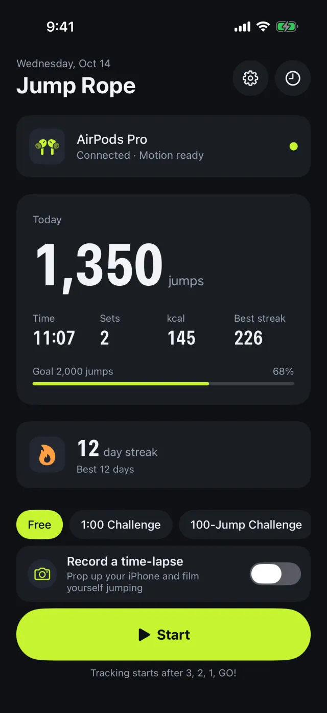
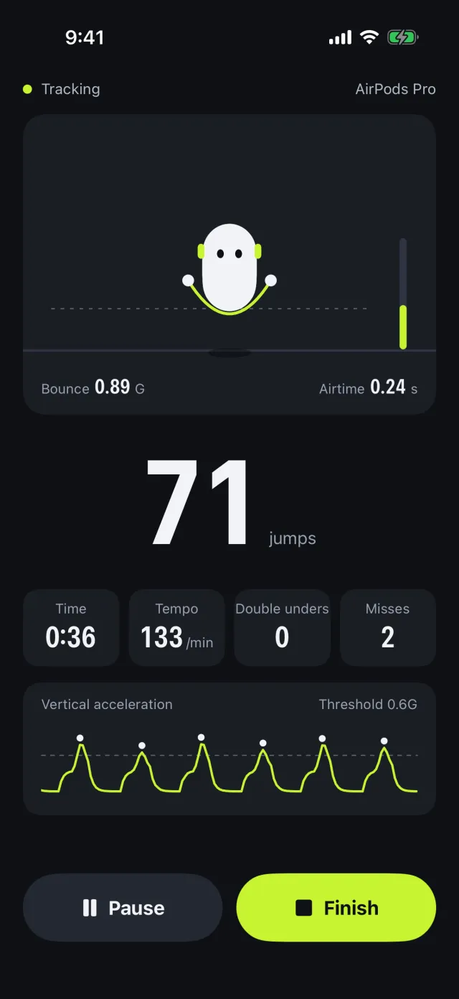
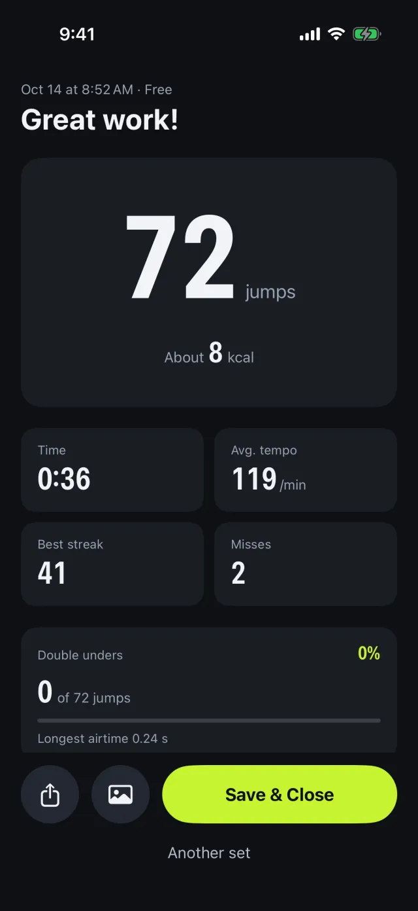
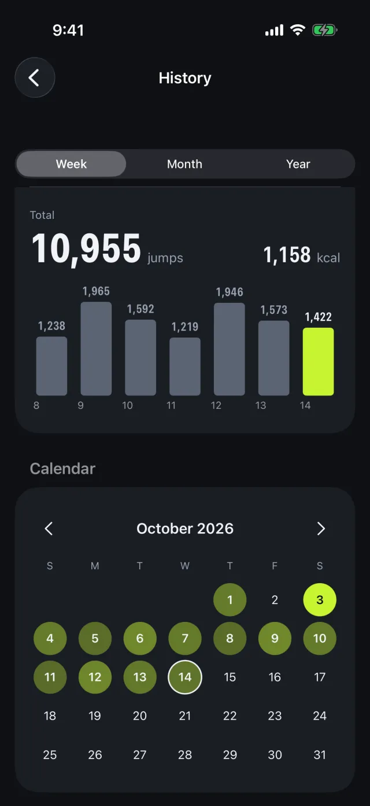
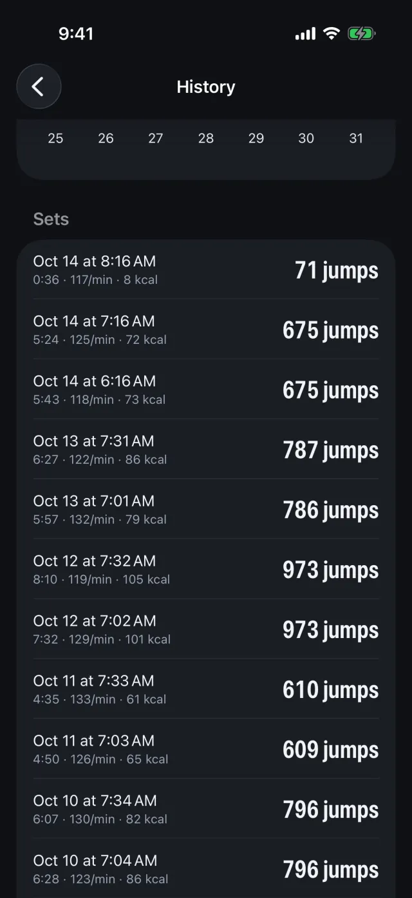

Automatic counting
Hands-free and accurate.
- Detects double unders and misses
- Calibrates to the way you jump
- An avatar that jumps as high as you do
Nawatob! counts every skip from your head movement. No phone in your hand, no strap on your arm — your tempo, calories, and daily streak are tracked automatically.
One-time purchase · No subscription · No ads
The motion sensors already inside your AirPods Pro do the counting.
Connect AirPods Pro, AirPods Max, or AirPods (3rd generation or later) to your iPhone.
A 3, 2, 1, GO! countdown kicks off each set. Leave your iPhone anywhere.
Every skip is counted from your head movement, with spoken counts right in your ears.
From a quick skipping session to interval training, Nawatob! keeps score so you can keep moving.
Hands-free and accurate.
Pick a goal and go.
See your progress add up.
Fits right into your day.





Records stay on your device and in your own iCloud account. No account required, no ads, no analytics. The developer collects no data at all.
Any AirPods with headphone motion support, such as AirPods Pro, AirPods Max, and AirPods (3rd generation and later). Heart rate is available with AirPods Pro 3.
An iPhone running iOS 26.0 or later, plus compatible AirPods.
No. Nawatob! is a one-time purchase with no subscriptions, no in-app purchases, and no ads.
Use “Calibrate to My Jumps” in Settings: do 10 regular skips and 5 double unders, and the app tunes detection to the way you jump. More answers on the support page.
Available on the App Store in English and Japanese.